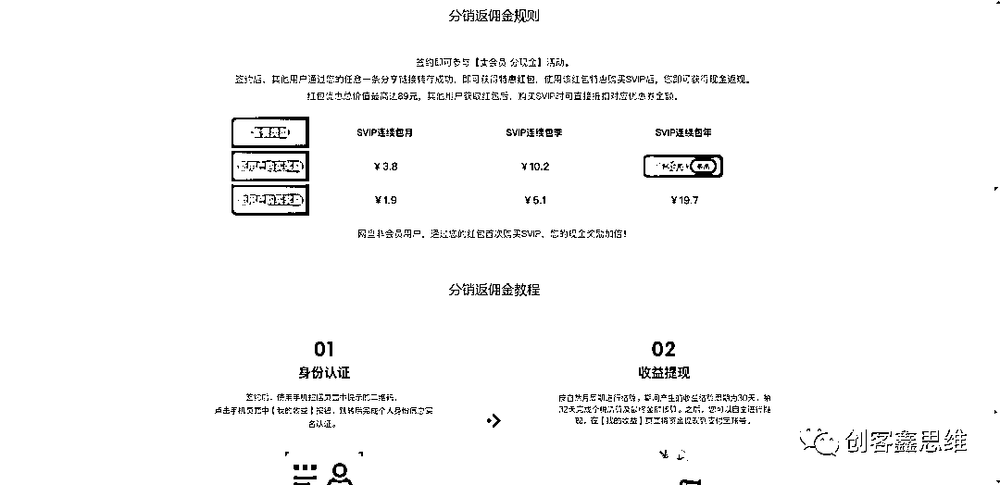

来源：https://gvfpj4c9484.feishu.cn/docx/EZLrdN8Amo9gu7xtWI1cd5oSnbd
当你看到这个文案的时候，恭喜你，获取一个赚钱的信息差知识，这个属于虚拟产品板块，也就是适合跑通从0到可以去尝试做的项目，反正又不投资也没成本。
我不知道大家用百度网盘用的多不多，反正我用的是挺多的。百度网盘的非会员下载速度，真的是急死你，上传东西非常快，但是下载东西的话，无论你的网速有多快，都是非常慢。但是百度网盘因为非会员限速的问题为人所诟病，但是因为人家一家独大，大家都在用，所以也没有什么办法。
经过我的测试，100M的宽带下载速度还不到100kb/S，下载一个稍微大点的东西能下一整天，想要快点下载下来就只能开通会员了。
还有一些在线解压、转存大文件、扩容等这样的功能，都是需要开通会员才可以的。百度网盘的会员还是挺贵的，标价是30/月，298/年。对于有需求的用户来说，没办法，只能是咬着牙开通会员了。但是如果能优惠一点，一月25元，一年258，那是再好不过的了，所以这就是很多使用百度网盘的人的痛点。
哪里有需求，哪里就有生意。今天就给大家介绍一个可以通过开通网盘会员来赚钱的项目，百度网盘入盘盟！
事情是这样的，8月份的中旬我无意中分享一个链接，结果时隔一个月之后我点到网盘一个分销中心板块，结果上面满满的的一串金额
无意间看到的收益截图
我原以为又是商家的啥手段，起初并不在意，就索性点了提现的按钮，结果刚点，弹窗出来个打钱的记录
提现到账记录
我点击去一看，结果那66块钱就顺利的到账了
显示到账成功
当时吧，我还是想确认怎么回事的，真的想搞清楚，无缘无故的给你打钱，就一个简单的无意间链接分享的，却有这样的收益，原以为是想拼夕夕的砍砍砍的永远差之毫厘，结果还真不是
最后我了解具体的一个情况，只需要参与会员的分销就可以，说到底也不复杂，有个盘盟入口渠道签约官方的盘主就行，免费的，至于那个66元，分享出去的网盘会员就对应的得到佣金。
你也会想别人干嘛购买，是这样子，之前老想知道那些低价官方的超级会员在哪里来的，一个月18，一年188的，这个价格是真便宜，就在这里，我自己之前开通会员月月30，最低25，一年298，最低258，结果无形中被信息差割了韭菜，真的，这种事情就是你不知道就不能得到，知道了那不得自己省钱还能赚钱
之前自己购买会员记录
至于如何的操作的，接下来后文具体的和大家讲一件
赚钱靠的是什么呢?一部分靠的就是信息差，你掌握了信息差，你就可以赚钱，你看到网盘相关的案例帖子，你今天就掌握了这个网盘盘盟可以赚钱的信息，你就可以去通过这个项目来赚钱，至于能赚多少钱？还是依靠一句老话，能赚多少钱，不是取决于项目，而是取决于人。
不要总是把赚钱的愿望寄托在项目的身上，而是要提高自己的认知水平，提高自己的赚钱能力，我们知道你捏死一只蚂蚁非常简单，为啥？降维打击啊。你高中毕业，让你做小学的题，是不是就非常简单？这个道理，大家也都知道，认知提升了，差距也就来了，所以想赚钱，提高自己的认知，你只有见的多了，学的多了，懂得多了，你遇到各种事情的时候，也就知道如何应对。
CPS是指按实际推广销售量进行收费的一种推广方式，CPS分销，简单的说就是淘客，推销产品获取佣金。
说到百度网盘大概率没有人不知道的，就没有人不用网盘的，但是呢很多人其实也不是很清楚具体有什么权益，毕竟我们一般就用个下载功能，其他的不太关心
百度网盘平台用户基本上没什么用不多介绍了；
权益介绍
百度网盘 VIP 类型分为超级会员和会员两种，具体介绍如下：
超级会员：享有最高 5TB 存储空间、极速下载、在线解压、视频倍速播放等特权。
会员：享有 2TB 存储空间、极速下载、在线解压等特权。
vip
SVIP
GS权益虚拟卡卷的价格
vip
SVIP
这是官方的千人千面吧，不同的用户以及是否是新用户或者连续包月乃至包年价格都是不一样的，这一点其实很容易看透，包括在不同的渠道，不一样的场地，不一样的用户，一样的商品不可能卖出不一样的价格。
有时候决定这个商品的价格不一定说一定是看商品本身的，还有一些其他方面的因素，也正因为是这样，所以说我们才能够去不断的提高除了商品之外的一些东西，比如说服务体验，甚至是一些附加值的一些东西。才能够通过这里边的一些信息差来赚到相对应的一个差价。
凡是做过一段时间生意的人，都能明白一个非常简单的道理，就是目标客户群不可能是所有人，根据画像，只需要锁定你范围的一部分用户，去做他们的生意，就够你赚的了。
肯定会遇到这样小部分的人，他们总是去问你的价格比某个地方便宜，比如说。有人会问的一句话是你们价格比闲鱼还贵？
一解：低价引流是最少成本之一，高成本卖出才是生意的本质，低买高卖。
二解：你永远满足不了100%的人，这一是一定的。
三解：如果发现价格比你低，那么你应该去提高你提供的产品相对价值，用这种溢价的方式，然后来提升自己的价格优势。
这点举个一个例子，同样是一件衣服，在1688在淘宝到拼多多上面都是同一家货源，但是价格他肯定还是有悬殊的，平台属性是一方面，更重要的是你不可能让所有的客户都会集中在某一个地方来看这个产品，他们总是有不同的信息流不同的购物习惯不同的
跑偏了，刚刚主要是遇到这个事情了，顺便说一嘴；
就像刚刚说的，你的商品不是适合所有的用户，如果找你购买的用户，他限时的官方价格比你便宜，那么直接让他买官方商品即可，下次没活动再找我们；
事实上，互联网上的生意和传统生意并没有本质的区别。无论是线下还是线上，大多数生意的本质都是低买高卖。我们只需要打通“低买”的渠道和“高卖“的销路，一个项目基本就可以上手实操。
很多人赚不到钱的本质原因就是眼高手低。看到一个项目的介绍和教程，感觉也就那么回事，这有啥难的。但是真正去实操了吗？没有！所有赚钱的这件事永远就不会靠近你，接下来实操讲解
首先你需要找到分销权限入口，通过这个权限，你就能获得低价会员。有些人可能会问，既然这么便宜，为什么别人不自己开通呢？这其实就是信息差，有些人甚至还需要付费购买这个入口，接下来教你“低买“的渠道。

按照官方流程 一步一步填写完善即可
点击关注然后找到我要赚钱，点击卖卡赚钱，登录自己网盘签约，里面价格便宜很多，官网298，这里是188。
点击我的-分享赚钱-选择推广方式签约成为盘主，成为盘主后同样拥有的网盘分销的权限，分销出去获取对应的佣金
我们打开【百度网盘联盟】公众号，找到右下角【赚钱入口】，点击方式一【方式1海报卖卡】，登录我们的【账号1】，然后点击【我的】--【我的盘盟】，然后我们点击【邀请加盟】，这里需要邀请10个人通过你的二维码或者链接注册。
这里注意10个人中，有一个必须是我们准备的两个网盘账号中的另一个【账号2】。其余9个随意，至于怎么拉够9个人不用我教你了吧，可以是家人，朋友，直接放自己的邀请链接，告诉别人这能省钱又可以赚钱
登录我们的【账号2】，一定是【账号2】，拿连包年卡举例，我们点击【分享赚钱】，点击【复制链接】，然后将复制的链接微信自己聊天框，打开链接，通过手机号验证码的方式登录我们接单用户的账号。直接支付连续包年，目前618活动价格是178，平时的价格是197。
这一步我们的【账号2】就能拿到【卖卡佣金】19元，我们的【账号1】就能拿到【邀请好友提成佣金】10元。这一步注意如果登录账号不显示连续包年需要让用户自己手动在app把自动续费关掉。
（1）购买前请确定是否取消百度网盘自动续费，否则扫码后不是优惠价格。
查看/取消自动续费方法
✔微信-钱包-支付设置-自动续费
✔支付宝-设置-支付设置-免密支付/自动扣款
✔百度网盘-我的-最下方帮助与反馈-续费管理
买完后可以在微信或支付宝里面解除自动续费签约。要不然到期后会自动续费，如果想自动续费的话可以不用解约。
这样我们综合成本下来就是197-19-10-8=160。月卡 季卡同理。 “低买“渠道也就打通了。
至于“高卖“，思路就很多了。某博、某吧、某乎、某书、某鱼，找到精准的社区或者论坛，进行活动的推广与宣发。想做低价走销量，可以直接到某鱼上架，一单利润控制在4-5块。一天出20单，就有100块到手。想做高价可以做微信朋友圈私域，产品有了，变现的思路就很多了。项目操作很简单，有时间的直接开干吧！下文聊聊几种新手快速上手的玩法
所以因为有着这样的需求，闲鱼包括其他平台就有了对应的供给。我们能在闲鱼包括其他平台上看到很多在卖百度会员的，而在百度网盘直接开通的话，大概是这样的一个价格。
这块每个人的价格设定可能不太一样，互联网有杀熟的习惯，也就是说，你账号注册的越久，使用越频繁，反而价格可能会高一些，对于有一些新账号或者基本上没怎么使用过这块功能的人价格会略低。
除此之外，自然也是有一些其他对应的渠道来直接开通会员的。百度官方为了提高网盘会员的销量，推出了全民分销这样的活动，只要你对应成为签约的盘主，我们会有对应的推广链接。
比如说同样的年费会员，我们的价格原本是188，再减掉37.6的盘主佣金以后，我们实际付款的价格就是150.4了。
类似于淘宝联盟、多多团长这样子。别人通过我们的链接购买会员以后我们就可以获得平台给到的推广收益。
这就是我们做这个项目的信息差资源，我们可以把对应的产品上架到闲鱼进行推广，给用户一些适当的优惠，比官方稍微便宜一些，就容易出单了。大部分过来找我们的一些用户，毕竟也是为了省钱。
比如在闲鱼很多同行定的这个价格，这个价格对比官方还是优惠挺多的，而我们卖出去一单也能赚24，相当于是双赢，买家可以省钱，我们是能赚钱。
具体在闲鱼如何上架产品，如何寻找文案和图片，基本上每个小伙伴用手机闲鱼搜索下关键词看下的话，应该还是会做模仿的，最简单的方式是参考同行（找闲鱼搜百度网盘，把别人的格式总结下来）
闲鱼平台不需要我们去做推广，用户量足够大，我们布局好关键词，每天定时擦亮，做好基础的优化，也会给到我们比较好的曝光。能把一个账号整明白，自己可以尝试批量多个账号操作。
在上架之前，一定要先参考同行的文案和价格的设定，可以看下大概的区间范围，包括规避一些风险。
运作这个项目，我们可以用两种方式。
第一种方式：当我们成为网盘盘主可以进行推广的时候，系统会给我们生成对应的分享码，客户可以通过我们的链接自己下单，完事儿我们给客户返红包就行了，具体返多少双方之间可以约定。
第二种方式：客户在闲鱼拍下订单以后，我们可以在自己的设备上登录对方账号来帮对方操作，但是这种情况下要注意及时让对方确认收货或者就是收货再帮对方操作也行，以防止有些白嫖的我们操作完以后直接来退款。
第二种方式要切记切记。
基本上在闲鱼有操作这个项目的，一天出单稳定也会在20多单，一单利润最少20左右，一个账号轻轻松松几百块。所以这个项目是非常适合小白上手操作的，没有太多的壁垒。
一旦你掌握了网盘“低价”产品，下一步的工作就是寻找人和流量。你可以准备一些电影、电视节目或学习资料等等，加入一些有真人互动的聊天群组，在群里积极参与交流，并在适当的时候免费分享你准备的资料。
这里注意的是当你开通好分销功能之后呢，你所分享的资料里面已经自动嵌入了你的这个推广的链接了，别人如果说要去保存资料，然后感觉权限不够开通会员的话，你已经有了这一部分的佣金，这个就是一个软广传播的一个作用
当其他人发现他们的网盘容量不足或下载速度太慢时，很可能会通过你的资料分享后保存跳转充值链接进行充值购买
你可以参考其他同行的文案发布方式，适当进行调整，并在文中包含你的推广二维码。
配合资料项目沉淀私域，双管旗下
虽然网上会有一些人声称学历对未来没有用，但是很多家长还是非常焦虑，尤其是在双培期间，他们生怕孩子学习成绩下降。家长们纷纷寻找资料，有的甚至买了不止一份。因此，这个项目仍然值得一试。
1.注册账号
你只需要使用手机号码进行注册，最好选择女性性别，年龄在25至35岁之间。
人设/昵称：你可以设置成"XX妈妈"、"XX老师"、"XX小学资料"等等。
头像：你可以选择女性真人头像或动漫头像。
注册之后，先适当地使用一段时间，不要一注册就开始发笔记。应该在前两天随便看看素材并分多次进去刷一个多小时。
2.确定选题
前期只需要完成图文内容，暂不需要制作视频。
首先，你需要确定要做哪个年级的资料。
比如，如果你要做三年级的资料，你可以直接在抖音或小红书上找到流行话题，并加以模仿制作。
3.找素材
有很多渠道能够提供做资料的素材，比如一些同行、百度、公众号和拼夕夕等等。
4.二次加工
在找到素材之后，需要进行二次加工，以增加原创度。有些资料可能已经被别人发布过了。
一旦拿到素材，如果它是PDF格式的，就需要将其转换成Word文档。调整字体大小和颜色，甚至可以更改背景颜色。
5.发布
建议每天发布2到3条笔记。在前期要坚持写日报，保持账号的活跃度。一个账号尽量只发布一个年级的资料。
6.导流
等在笔记下方评论留言直接用私信的方式引导到微信里面，注意要用一些谐音的微信代替，甚至可以放在计算机上面。
7.成交
直接的配合虚拟资料产品售卖的方式，卖资料，别人购买好之后呢，直接把这个网盘资料发给对方就可以了，有一个方法可言，可以发过那个网盘的链接，直接在发送个消息，用一个微信笔记的形式，因为很多人保存资料确实说需要购买会员的，与其说在官方购买原价的会员，不如说在这里面能够少几块钱，少几十块钱来购买，这个站在客户的角度是非常感谢你的，毕竟之前我也因为不知道这个信息差也多花了不少钱直接购买原价的
这个确实不用去硬性的去推广，因为你分享的资料给别人的同时已经嵌入在这个佣金在里面，别人需要开通他会自行在网盘里开通，开通好之后呢，你就会得到这一部分的佣金，像上述的笔记呢，可以给大家提供一个选择购买的渠道，记得价格低永远是优势！
这是一篇从成为签约盘主，到获取佣金权益，到具体的玩法思路的分享，如何提现都已经完整的给大家展示了，上面，也是自己一些提供过程的一些详细截图，这个收入完全是可以在目前还没有闭环项目的，暂时也不知道从哪方面下手的，可以去坐坐，一定是能够获取正面反馈的一件小项目，不再钱多，在于开始，我曾在亦仁益语里看到过这样一句话
“不管怎么样，加油先赚到第一块钱。
第一块钱是赚钱路上的质变，有了第一块钱的正反馈，你才会真的相信，原来除了打工上班赚工资，真的有其他赚钱的方式
因为这第一块钱的正反馈是可以形成一个完整的做流量，做产品，做收入的一个闭环，那么接下来就是思考如何的去优化和放大，如何的去持续的做上面的正反馈循环的事情，任何的一百万都是从一块钱赚到的”
我是泽言，新的一年，祝愿大家都可以生财有术，